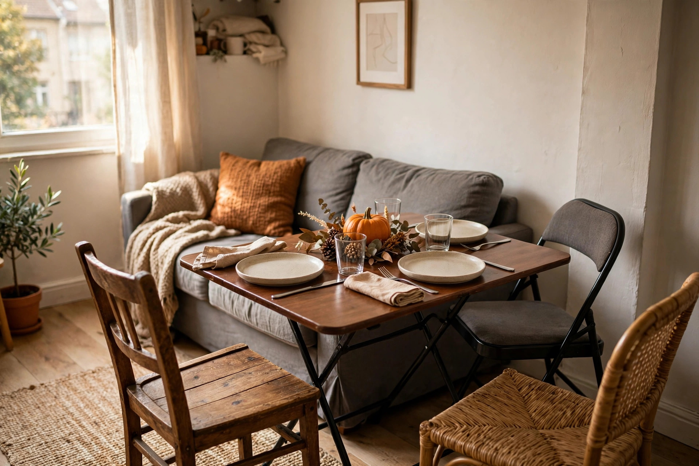

Hosting Thanksgiving in a small apartment or condo: the one-oven playbook

Most Thanksgiving advice quietly assumes a dining room. If your reality is a condo or a one-bedroom, the holiday is still entirely doable — it just needs a different operating system. The constraints are real (one small oven, one fridge shelf for the turkey, nowhere to put eight chairs), but they're all solvable with decisions made ahead of time.
The constraints, honestly assessed
Take stock of four things first. Oven: one cavity, and the turkey occupies it most of the afternoon — everything else must be make-ahead, stovetop, or timed into the turkey's rest window. Fridge: a thawing turkey needs serious fridge space for days — one full day per 4 lb — so clear space the week before. Seating: you don't own enough chairs — a logistics problem, not a shopping problem. Dishes: your everyday set won't cover ten people, and your sink can't handle the aftermath. Decide the dish strategy now, not at 8 p.m. on Monday.
Pick your service format
The format decision drives everything else. Here's how the three realistic options compare for a small space:
| Sit-down | Buffet | Staggered courses | |
|---|---|---|---|
| Space needed | Highest — one table, everyone seated | Lowest — food on the counter, people wherever | Medium — small table, courses in waves |
| Seating | One chair per guest, matched | Mix: chairs, stools, ottomans, floor cushions | Fewer seats than guests; people rotate |
| Dishes | Full place settings | Minimal — plate, fork, done | Small plates, washed between waves |
| Oven demand | High — everything hot at once | Low — room-temp-friendly food | Spread across the evening |
| Best for | 6 guests max | 8–10 guests | 10+ in a studio |
The buffet is the small-space default: fewest chairs, fewest dishes, least oven choreography. Set it on the kitchen island or counter so the one table stays free for seating. Six or fewer guests? Sit-down is lovelier and feasible. Staggered courses are really a crowd-management tool — small plates, two or three waves, nobody waiting long.
The one-oven hour-by-hour schedule
Everything below assumes a 12-pound turkey at 325°F — a thawed bird cooks a little under 20 minutes per pound, so budget roughly 3½–4 hours, and confirm doneness with a thermometer at 165°F in the thigh. Rest the bird per the turkey basics guide — that window is when the oven goes back to work.
- 1:00 p.m. — turkey in. The oven is now a turkey-only zone for the next few hours. Nothing else goes in; plan stovetop and room-temp dishes around it.
- 1:00–4:30 — the oven does its thing. Use the time for everything that doesn't need heat: set the table, chill drinks, assemble cold sides, clear a landing zone near the oven for the hot roasting pan.
- ~4:30 — turkey out at temperature. Tent it loosely with foil. This starts the rest window: roughly 30 minutes with the oven free.
- 4:30–5:00 — the rotation. Sides go into the now-free oven in order of need: gratins and casseroles first (they hold heat well), rolls last (they need minutes, not half-hours). Anything made ahead just needs reheating, not cooking.
- 5:00 — carve and serve. The turkey has rested, the sides are hot, the oven is off. Dinner hits the table in one movement instead of a frantic relay.
If the schedule still doesn't fit, change the menu instead of fighting the oven: room-temperature dishes (salads, cranberry sauce, bread, most desserts) don't need the oven at all, and each one is a rotation you don't have to choreograph.
Canadian condo specifics the US guides skip
The American small-apartment guides are decent on furniture Tetris, but they miss a few things that matter here. Book the party room early — if your building has one, ask the concierge now; everyone with the same idea books it first. The backup plan is real: move the couch and TV into the bedroom for the night, rent a long table and chairs, and turn the whole unit into a dining room for one evening. Use the balcony as a fridge. A cold October balcony is a free second refrigerator for drinks — keep food covered and bring dairy and meat back inside. Go biodegradable on dishware if your building has an organics chute: quality compostable plates handle the small-sink problem and go straight down the chute. And make it a potluck with specific assignments — in a small kitchen, every dish a guest brings is oven time and fridge space you don't have to find.
The teardown plan
Plan the ending with the same care as the dinner. Clear a closet (or shift its contents under the bed) for coats before anyone arrives, and buy a bigger trash bag than you think you need. The classic small-apartment move for the dish pile: the bathtub, behind the shower curtain — it keeps the tiny kitchen usable. And with limited fridge space, the leftover game plan becomes a space strategy: pack guests' favourites into containers to take home and your fridge survives the night.
FAQ
Can I really fit 10 people in a one-bedroom? For a buffet, yes — people need somewhere to put a plate and somewhere to sit eventually, not ten matching chairs. Borrowed folding chairs, stools, and ottomans cover it.
What if I don't have a roasting pan? A disposable foil roaster from the grocery store works for one bird and goes straight in the recycling — one less thing to store in a small kitchen afterward.
Should I just book the party room instead? If it's available, it's the easiest version of this whole guide — but October party rooms go fast.
Keep readingNext: make-ahead sides that carry the meal →